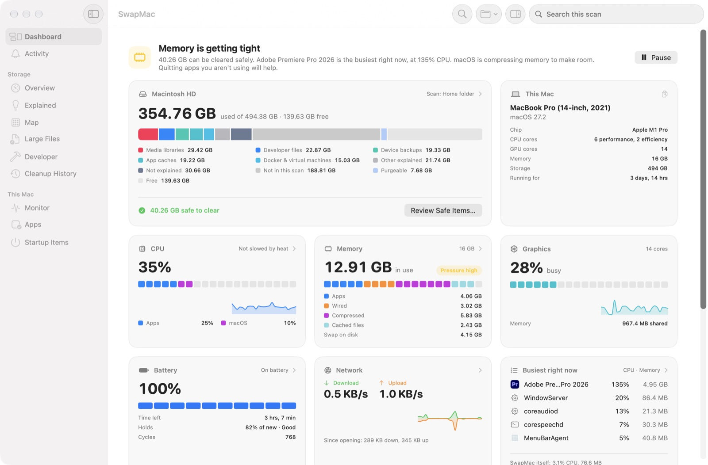
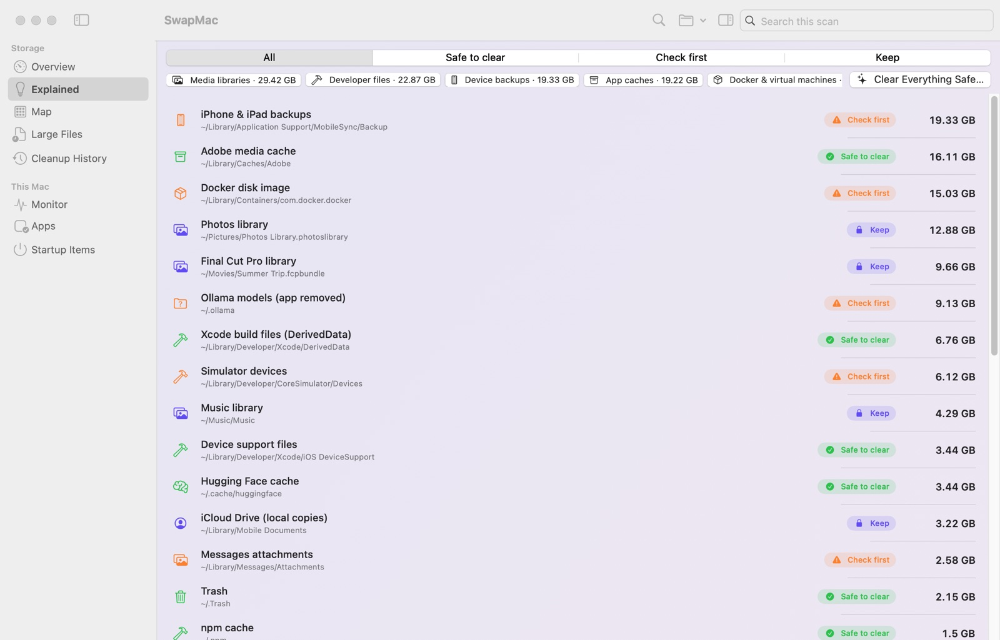
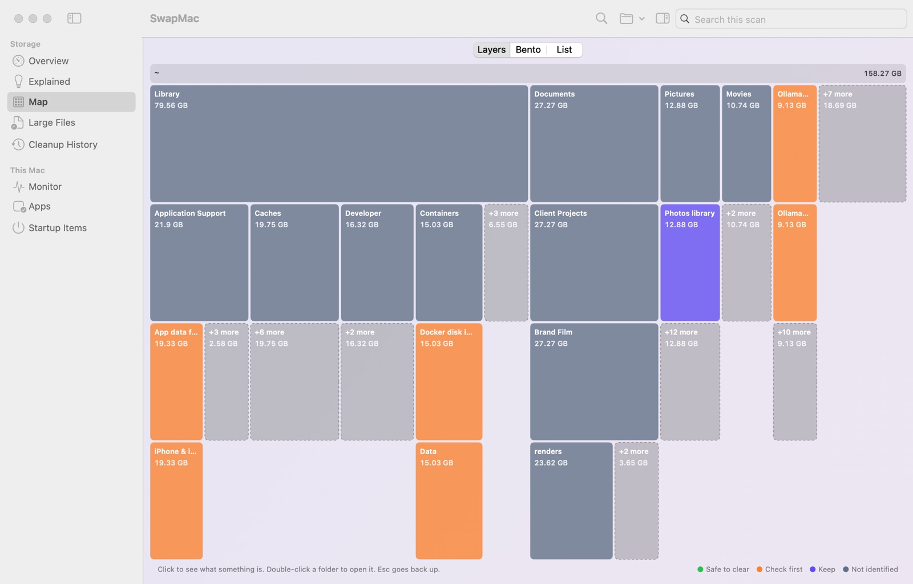

SwapMac explains every folder in plain English: what it is, which app owns it, and whether it's safe to clear. You decide what goes, and it all goes to the Trash first.
14 days of Pro free, no card · macOS 14 or later · Apple silicon and Intel · Opening it the first time



Storage settings show one big gray block and stop there. SwapMac names about 200 kinds of folders inside it, and says which ones rebuild themselves and which ones are yours.
The app rebuilds it on its own.
~/Library/Developer/Xcode/DerivedDataXcode recreates it on the next build, which takes a little longer.~/Library/CachesFiles apps keep so they load faster. Apps rebuild them as you use them.It could matter to you, so it's never ticked for you.
~/Library/Application Support/MobileSyncSafe to remove only if the device is backed up to iCloud or a newer backup exists.…/com.docker.docker/Data/vms/0/data/Docker.rawIt doesn't shrink when you delete images, so prune inside Docker.~/.ollama/models · LM Studio · Hugging FaceSeveral gigabytes each. Keep the ones you still use.~/Library/Application Support/…SwapMac says why it thinks the app is gone.It's yours, or macOS needs it.
~/Pictures/Photos Library.photoslibrarySwapMac shows how big it is and never offers to clear it.~/Library/Mail · ~/Library/MessagesProtected by a built-in never-delete list, whatever a rule or a click says.Free and Pro are marked up front, so nothing surprises you after a scan.
Your whole Mac or any folder, with a plain-English note for everything SwapMac recognises.
Layers, tiles and a list, colored by safety. Double-click to go in, Esc to go back.
Big files you haven't opened in months, by size, age and type.
Live CPU, memory, network and battery, with notes on what common processes do.
Background helpers that start with your Mac, with the broken ones flagged.
Review every cache and build file that rebuilds itself, then move them to the Trash together.
Remove an app with the caches, settings and support files it leaves behind.
Press ⌥⇧Space in any app to find a file. Free space, CPU and memory one click away.
Two promises SwapMac keeps, whatever you click.
Every cleanup moves files to the Trash, and Cleanup History puts them back until you empty it. A never-delete list guards macOS, your main folders, mail, passwords, iCloud Drive and Photos.
Scans, file names and results stay on your Mac. SwapMac only goes online to check for updates and, with Pro, to check your license.
Read-only. Nothing changes while it runs.
What each item is, who owns it, what clearing it does.
Only safe items start ticked. Items an open app is using are left out.
Put Back from Cleanup History until you empty the Trash.
Try every Pro feature free for 14 days, no card needed. When the trial ends, Pro features pause; nothing is deleted and your history stays.
Checkout shows the price in your currency. Your license key arrives by email; payments are handled by Dodo Payments. Changed your mind? Refunds within 14 days of purchase: content@triignite.com.
SwapMac isn't notarized by Apple yet, so macOS asks you to confirm it once. It takes about 20 seconds, and you never need to do it again, not even after updates.
Drag SwapMac to Applications and open it. macOS says it couldn't verify the app. Click Done; nothing is wrong with your Mac.
Open System Settings → Privacy & Security and scroll down to Security. Click Open Anyway next to SwapMac.
Enter your Mac's password, then click Open Anyway once more. SwapMac opens, and from now on it opens normally.
After moving SwapMac to Applications, this removes the download flag so it opens straight away:
xattr -dr com.apple.quarantine /Applications/SwapMac.app
Everything macOS doesn't file under apps, documents or photos: caches, logs, app support files, local Time Machine snapshots, iPhone backups, developer tools and leftovers from removed apps. Some of it rebuilds itself and is safe to clear; some of it is yours. SwapMac tells you which is which.
macOS hides some folders, such as Mail, Messages, Safari and many apps' data, until an app has Full Disk Access. Without it, SwapMac still works, but those folders aren't measured and System Data looks smaller than it is. SwapMac only reads folders to measure them.
SwapMac isn't notarized by Apple yet. The first time you open it, go to System Settings → Privacy & Security and click Open Anyway. You only need to do this once; updates install without it. The steps, with pictures.
SwapMac checks once a day. When there's a new version it shows what's new and asks; nothing downloads until you click Install Update. You can turn the daily check off in Settings → Updates.
Choose SwapMac → Uninstall SwapMac…. It turns off opening at login, can deactivate your license, and moves the app and everything it keeps on your Mac to the Trash, then shows what it removed.
It moves things to the Trash instead of deleting them, and Cleanup History can put them back until you empty the Trash. A never-delete list stops it touching macOS itself, your main folders, mail, messages, passwords, iCloud Drive and Photos libraries, whatever a rule or a click says.
An update check about once a day and, if you have Pro, a license check about once a week. Never file names, scan results or usage.
Every Pro feature, for a one-time $19.99, with lifetime updates. One license works on up to 3 Macs; to move it, click Deactivate on This Mac in Settings → Pro. If it isn't right for you, ask for a refund within 14 days of purchase at content@triignite.com.
In the receipt email from Dodo Payments. In SwapMac, open Settings → SwapMac Pro → Enter License Key. If you can't find it, write to content@triignite.com.
Something else? content@triignite.com
Scan it, read what everything is, and clear only what you choose.